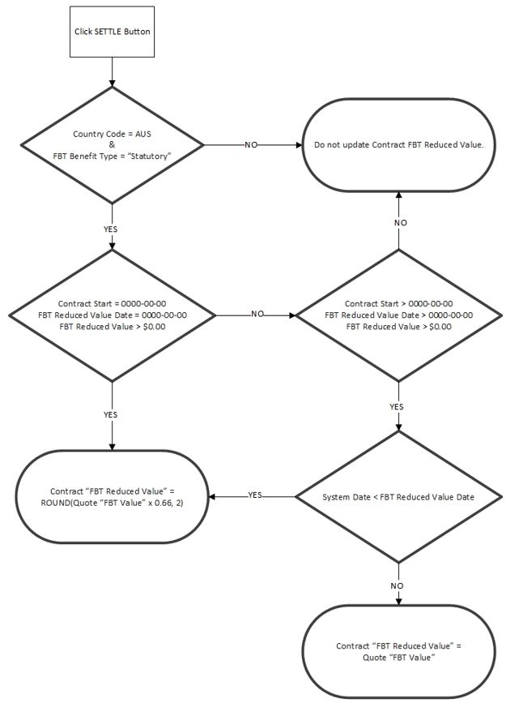
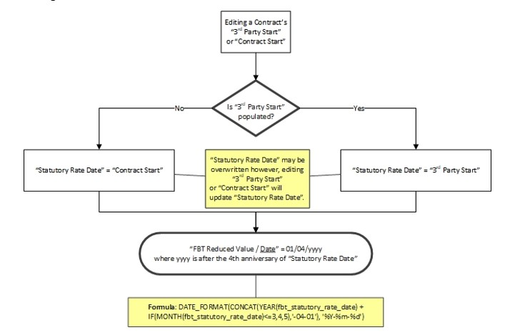
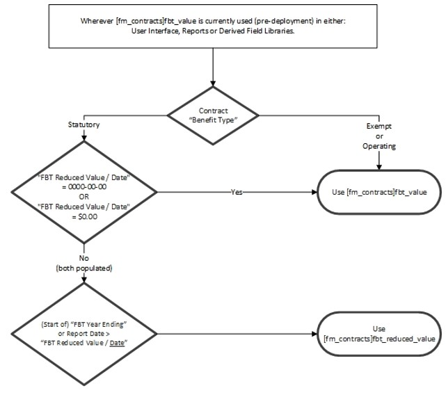

FBT Reduced Value / Date
From Help wiki
Main Page → Fleet / Administration / Contracts → FBT → FBT Reduced Value / Date
Contents |
Overview
The "FBT Reduced Value" field holds the once only reduction to the provider of one third of the 'cost price' or 'leased car value', after a car has been held for four years.
The "FBT Reduced Date" field stores the 1st day of the FBT year following the fourth anniversary of the date the car was first owned or leased by the provider of the car benefit.
This is as described in detail on the ATO site.
| These fields were added to the system on 25/05/2020. Contracts that were created from accepted quotes prior to this date do not have populated values. Contact your Account Manager if you would like to review or update the values or dates of pre-existing contracts. |
Reports
The value and date recorded in "FBT Reduced Value / Date" are used in the following reports when the Contracts / FBT "Benefit Type" = 'statutory'.
- FBT Per Driver
- FBT Per Vehicle
- FBT Statutory
- FBT Optimal
- FBT Statutory Annual
- Novated Driver
- Novated Driver Budgeted
- Novated Driver Budgeted with Funds
Accepting a quote
When a quote is accepted, "FBT Reduced Value" will be calculated and populated if the Quotes / Contract "Benefit Type" field is 'Statutory'.
The calculation is this: ROUND( [qt_quotes]fbt_value * (2/3), 2) AS [fm_contracts]fbt_reduced_value.

Settling quotes
When a quote is settled, either "FBT Value", "FBT Reduced Value", or both are updated when the FBT Type is 'Statutory' and the Country code is 'AUS' in [gb_controls]country_code.

Populating or updating "FBT Reduced Value Date"
"FBT Reduced Date" is not an editable field. There are three ways you can add or update the date.
- Update the Contracts / Contract "3rd Party Start" date
- Update the Contracts / Billing "Contract Start" date
- If you enter an "FBT Reduced Value" to an existing contract with a positive value, the "FBT Reduced Date" will be updated to match the "Statutory Rate Date".
For option 1 and 2 the 'Date' is determined in the following way

Use of "FBT Value" or "FBT Reduced Value"
The use of the Contracts / FBT tab "FBT Value" or "FBT Reduced Value" in Reports and Derived Field libraries are determined as follows

Useful Queries
select pm.posting_map_code AS contract_type,cl.client_code,c.contract_id, c.reg_no, c.contract_start, c.third_party_start, c.contract_end, c.suspend_date , c.fbt_statutory_rate_date, c.fbt_benefit_type, c.fbt_value, c.fbt_reduced_value, c.fbt_reduced_value_date , noreg.contracts AS duplicate_reg_no ,q.quote_id, q.new_used, q.fbt_value AS quote_fbt_value, q.fbt_benefit_type AS quote_fbt_benefit_type FROM fm_contracts AS c inner join fm_clients AS cl ON cl.client_id = c.client_id inner join gl_posting_maps AS pm ON pm.posting_map_id = c.posting_map_id LEFT JOIN qt_quotes AS q ON q.quote_id = c.quote_id LEFT JOIN (select reg_no,COUNT(contract_id) AS contracts from fm_contracts AS c GROUP BY reg_no) AS noreg ON noreg.reg_no = c.reg_no WHERE c.suspend_date = '0000-00-00' AND c.reg_no != 'ORDER' order by pm.posting_map_code,cl.client_code,c.contract_id ;
System Notes
- (DEV-20851) FBT Value - auto reduction for 4th year. Live 25/05/2020
- (DEV-21476) FBT Reduced Value enhancements. Live 23/08/2021

{kind=link}
{kind=link}
{kind=link}
{kind=link}